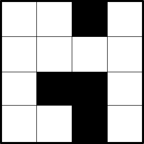
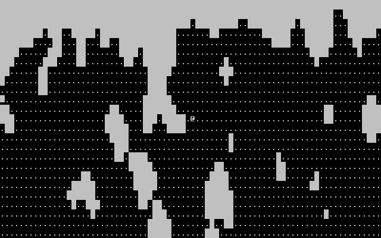
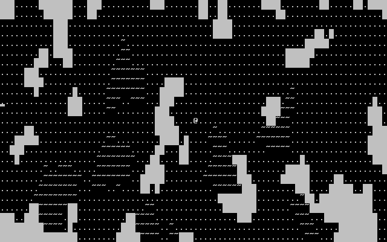
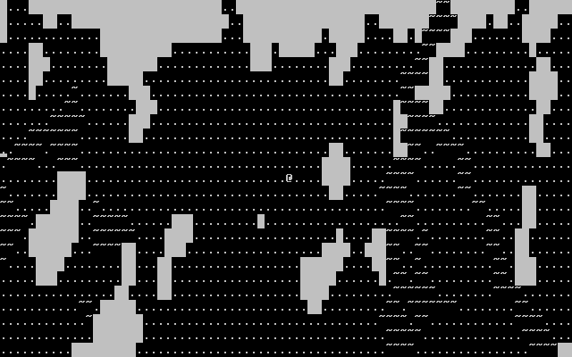
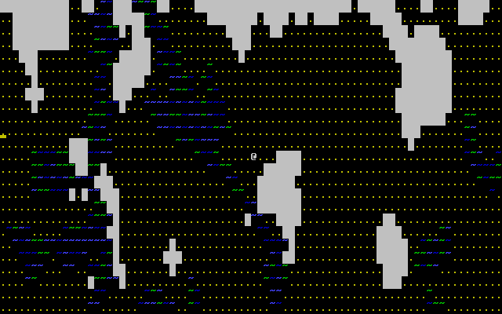
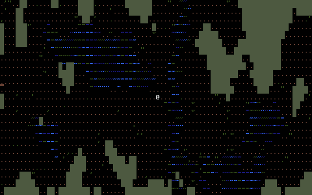

Last time, we covered some basic procedural generation algorithms. Now, let's see what we can do with these techniques. In the segment below, I'll be demonstrating the design and development of the swamp cave, an area from a nonexistent roguelike.
Before we begin, let's improve the algorithms from last time. We'll start by making a simple upgrade to the Drunkard's Walk. Our previous Drunkard's Walk had no limits on its length. Thus, its random nature could cause it to stall for a long time if we asked it to clear out too much space. To fix this, we'll add a hard limit on how many iterations the walk lasts. In my solution, I replaced the original while loop with the following for loop:
for(uint16_t i = 0; i < goal * 2 && count < goal; ++i)
This loop iterates for the maximum allowed number of steps, but will also break out when the goal value is reached. The other improvement that I made to the Drunkard's Walk was taking the goal value as an argument to the function. While this is not strictly required, it makes it easy to customize the generation function further down the road.
Before we start working on erosion, I'll be making one important change to the code. Up until now, we've been passing around positions as a pair of arguments (line and column, or x and y). This is fine for simple things, but it'll cause us headaches if we need to store several positions, at which point it becomes a hassle. To fix that, I've replaced all of the argument pairs with a simple struct for holding positions. All it does is store the same data (y and x) as before, but it a single piece of data that can be returned from functions or used in an array.
With that detail handled, let's turn our attention to the "erosion" algorithm and try to fill in those extra pockets. The theory behind this is fairly straightforward: Find each pocket and record the size, then fill in all but the largest. Actually detecting and measuring these pockets may seem daunting, but we can accomplish this using a simple flood-fill algorithm.
The basic idea behind flood-filling an area is "discovering" neighboring tiles each time a tile is filled. This way, the fill spreads across all identical tiles, covering the desired area. This may seem like a natural case for recursion (Fill tile, call self on neighboring tiles), but this is actually a pretty bad idea because flooding large areas can result in a stack overflow. Instead, I'll show you how to do it with a separate stack (a queue will also work, but may be slower depending on how you use it). Take a look at the animation below:
In the animation, black tiles are walls, gray tiles are "discovered" tiles on the stack, and blue tiles have been filled in. Every step, the top tile on the stack is removed and filled, then the adjacent (valid) tiles are pushed onto the stack. This loop continues until the stack is empty, turning our potentially dangerous recursion into a simple while-loop. Here's the code I used:
52 int group_flood(int** groups, point p, point corner, int group_index) { 53 point* remaining = calloc(10, sizeof(point)); 54 uint16_t remaining_data_size = 10; 55 uint16_t remaining_count = 1; 56 int counter = 0; 57 remaining[0] = p; 58 59 while(remaining_count > 0) { 60 remaining_count--; 61 counter++; 62 // Note: Because this value is copied here, changing it later won't effect cur. 63 point cur = remaining[remaining_count]; 64 65 // If we don't have enough slots for all adjacent tiles, resize 66 if(remaining_count + 4 > remaining_data_size) { 67 remaining_data_size += 4; 68 remaining = realloc(remaining, remaining_data_size * sizeof(point)); 69 } 70 71 groups[cur.line][cur.column] = group_index; 72 if(cur.line > 0 && groups[cur.line - 1][cur.column] == -1) { 73 remaining[remaining_count] = (point){ .line = cur.line - 1, .column = cur.column }; 74 remaining_count++; 75 } 76 if(cur.line < corner.line - 1 && groups[cur.line + 1][cur.column] == -1) { 77 remaining[remaining_count] = (point){ .line = cur.line + 1, .column = cur.column }; 78 remaining_count++; 79 } 80 if(cur.column > 0 && groups[cur.line][cur.column - 1] == -1) { 81 remaining[remaining_count] = (point){ .line = cur.line, .column = cur.column - 1 }; 82 remaining_count++; 83 } 84 if(cur.column < corner.column - 1 && groups[cur.line][cur.column + 1] == -1) { 85 remaining[remaining_count] = (point){ .line = cur.line, .column = cur.column + 1 }; 86 remaining_count++; 87 } 88 } 89 90 return counter; 91 }
...And here's the addition to the generator that isolates the biggest group:
184 int** group = calloc(m->lines, sizeof(int*)); 185 for(int i = 0; i < m->lines; ++i) { 186 group[i] = calloc(m->columns, sizeof(int)); 187 for(int j = 0; j < m->columns; ++j) { 188 if(m->data[i][j].solid) 189 group[i][j] = 0; 190 else 191 group[i][j] = -1; 192 } 193 } 194 195 int group_index = 1; 196 int largest_group = -1; 197 int largest_group_size = 0; 198 for(int i = 0; i < m->lines; ++i) { 199 for(int j = 0; j < m->columns; ++j) { 200 if(group[i][j] < 0) { 201 int size = group_flood(group, (point){.line=i,.column=j}, (point){ .line=m->lines, .column=m->columns }, group_index); 202 if(size > largest_group_size) { 203 largest_group = group_index; 204 largest_group_size = size; 205 } 206 group_index++; 207 } 208 } 209 } 210 211 for(int i = 0; i < m->lines; ++i) { 212 for(int j = 0; j < m->columns; ++j) { 213 if(group[i][j] != largest_group) { 214 m->data[i][j].solid = TRUE; 215 m->data[i][j].character = 219; 216 } 217 } 218 }
With this, your "erosion" generator should now always result in a single unbroken area. Now let's move on to this segment's topic, where I'll demonstrate how to design and create an area for a roguelike.
Normally, you'd want to come up with each area of your roguelike as part of the greater whole, in order to make the game world feel more cohesive. For instance, the areas of Something Something Office Rampage were each designed to fit the narrative of the game (disgruntled office worker at Umbrella Corp. stand-in trashing the place). This approach is more likely to give good results than making things up as we go along.
Unfortunately, we can't do that here. Since I'm building a level outside the context for any particular game, there's no narrative or world to fit into in the first place. Instead, the level that I'll be building is a sort of stand-alone area, something with a strong theme that looks like it could be at home in a larger work.
The swamp cave is a damp and winding marshy underground cavern full of water and grime. It presents a perfect environment for demonstrating our algorithms.
When you have an idea for your level's theme, there are two questions that you can ask yourself to flesh out your design:
In our case, these questions are easy to answer. Water features, such as ponds and rivers, are perfect for a swamp, while also creating natural barriers for the player to overcome. If we then populate the area with a higher concentration of flying and amphibious enemies, the level's theme and challenge will come together naturally. To keep things simple, I'll be focusing on 2 specific obstacles: Ponds and Rivers.
Now that we've decided on the primary features of our level, the next step is to figure out how to generate each of them. First, the walls. I'm starting out by generating a mostly empty cavern using the erosion generator.
As you can see, it's very boring. Let's spruce it up with some ponds! To make ponds, I've repurposed the erosion generator. When running the generator on small maps with the right ratio (in this case, 50%), the result is a blob of open space. So, to place a pond you simply need to make a second map, run the generator, and copy the open spaces over as water. Here's the code I ued for copying:
231 void map_place_water(map* m, map* src, point loc) { 232 point ul = (point){ loc.line - (src->lines / 2), loc.column - (src->columns / 2) }; 233 point br = (point){ loc.line + (src->lines / 2), loc.column + (src->columns / 2) }; 234 point offset = (point) {0}; 235 236 if(loc.line < src->lines / 2) { 237 offset.line = (src->lines / 2) - loc.line; 238 ul.line = 0; 239 } 240 if(loc.column < src->columns / 2) { 241 offset.column = (src->columns / 2) - loc.column; 242 ul.column = 0; 243 } 244 if(br.line >= m->lines) 245 br.line = m->lines - 1; 246 if(br.column >= m->columns) 247 br.column = m->columns - 1; 248 249 for(uint16_t i = 0; i < br.line - ul.line; ++i) { 250 for(uint16_t j = 0; j < br.column - ul.column; ++j) { 251 if(!src->data[i + offset.line][j + offset.column].solid) { 252 m->data[ul.line + i][ul.column + j].character = '~'; 253 m->data[ul.line + i][ul.column + j].solid = TRUE; 254 } 255 } 256 } 257 }
Most of this code is dedicated to 'clipping' the bounds of the map being copied, so that it doesn't spill over the edge of the other map. After placing a few ponds, our level now looks like this:
Next, let's add a more prominent water feature. Unlike ponds, rivers require some custom work to make them nice. To make a river, I used a random walk. Unlike Drunkard's Walk, however, this walk always moves from the top of the map to the bottom, randomly shifting left and right. At each step, it places a randomized horizontal line of water, which eventually leads to a meandering and natural-looking line.
To finish it off and cement it as a proper river, I made it branch. This may seem difficult, but the solution I chose was quite simple. At a random point in the walk, I record the position of the cursor. Then, I perform a second walk from that point but force the walk to move to one side horizontally. The result is (usually) a nice fork in the river. Here's what the code looks like:
258 void map_generate_river(map* m, uint16_t column) { 259 bool split = FALSE; 260 point split_point; 261 int split_mod = 1; 262 for(int i = 0; i < m->lines; ++i) { 263 int width = rand() % 4 + 2; 264 int min = -width / 2; 265 if(column + min <= 0) 266 min = 1 - column; 267 int max = width / 2; 268 if(column + max >= m->columns - 1) 269 max = m->columns - 2 - column; 270 for(int j = min; j < max; ++j) { 271 m->data[i][column + j].character = '~'; 272 m->data[i][column + j].solid = TRUE; 273 } 274 column += rand() % 3 - 1; 275 276 if(rand() % 10 == 0 && !split) { 277 split = TRUE; 278 if(rand() % 2 == 0) 279 split_point = (point){ .line = i, .column = column + max + 1 }; 280 else { 281 split_point = (point){ .line = i, .column = column + min - 1 }; 282 split_mod = -1; 283 } 284 } 285 } 286 287 if(split) { 288 column = split_point.column; 289 for(int i = split_point.line; i < m->lines; ++i) { 290 int width = rand() % 4 + 2; 291 int min = -width / 2; 292 if(column + min <= 0) 293 min = 1 - column; 294 int max = width / 2; 295 if(column + max >= m->columns - 1) 296 max = m->columns - 2 - column; 297 for(int j = min; j < max; ++j) { 298 m->data[i][column + j].character = '~'; 299 m->data[i][column + j].solid = TRUE; 300 } 301 column += rand() % 3 * split_mod; 302 } 303 } 304 }
It's a little messy, but as you can see below it really does the trick!
We now have a swamp cave. The only problem is... it doesn't look swampy at all! Sure, we've added some water features, but without color it blends in with the rest of the scene. So, let's add some color to our map.
As I mentioned back in part 2, PDCurses provides 16 different colors which are used in pairs (text and background). Each color and pair has its own numerical index that can be used to refer to it. With that knowledge, let's jump right in! There are several useful functions for initializing color:
Once colors and pairs are ready, all that's left is to use them. The color_set(pair id, opts) function is used to tell curses which color to use when drawing. All you need to do is call the function with the id you want (opts should be left as NULL, it isn't often used), and all text that you draw after that will use the pair you chose. I already put color pair ids on the tile and actor structs ahead of time for this very moment, so all that I've done to enable color is add color_set() calls to the drawing functions. I've also set the ground color to yellow, and added a mix of blues and greens to the water. The result looks like this:
It's a good start, but we can do better. The final function that I'll bring up today is the init_color(color id, red, green, blue) function. With this function, we can change any color to make it match what we're using it for. While the arguments are pretty straightforward, one thing to be aware of is that each color value is an int between 0 (nothing) and 1000 (everything). This sort of notation is rather unconventional, but it's not too bad once you get used to it. After swapping colors around, and adding some random bits of grass to the empty tiles, the result is much better:
I won't call this cave perfect. With just the terrain, it still feels rather empty, and I could spend the rest of the day just tweaking colors and adding small details. At the end of the day, making a good environment takes time, regardless of medium. Still, I hope this example has given you some inspiration to create your own natural procedural spaces!
I don't have any specific tasks for you to follow this time around. Instead, try to follow along the steps that I showed in this segment to create your own level.
To download the code as of this part, click here.